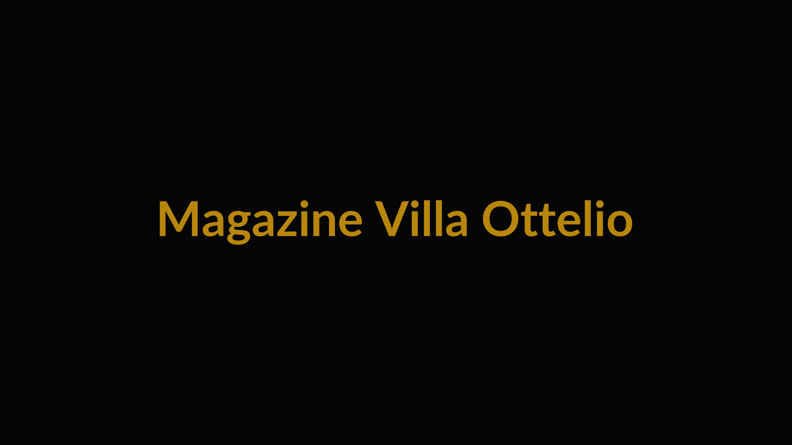

Approfondimenti su Villa Ottelio, lo stile di vita friulano e il valore dell'investimento storico.
Storia, Architettura, Natura
Raccontare l'anima della casa per farla innamorare.
Territorio e Lifestyle
Vendere il Friuli e la posizione strategica.
Dati razionali per investitori
Dati razionali per investitori e imprenditori.
Artisti e collezionisti
Per il target artisti e collezionisti.